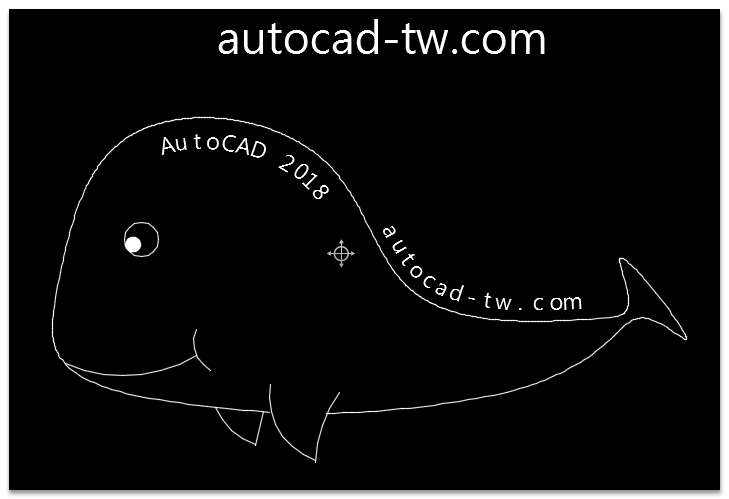

大家好：
分享LISP大師 Lee Mac 一個有趣的LISP程式！
我繪製了一個簡單的曲線(雲形線)，然後指定圖面文字或輸入文字，再選擇曲線即可文字貼齊曲線，而且可以跟著滑鼠動態展示～
註：僅支援英文及數字，不支持中文字體。
想要玩的朋友可以來論壇下載喔^_^
程式作者 Lee Mac 提供：http://lee-mac.com/index.html

代碼:
指令: CURVETEXT
輸入文字或選擇文字:
選取曲線:
Position Text: [+/-] Offset, [</>] Spacing